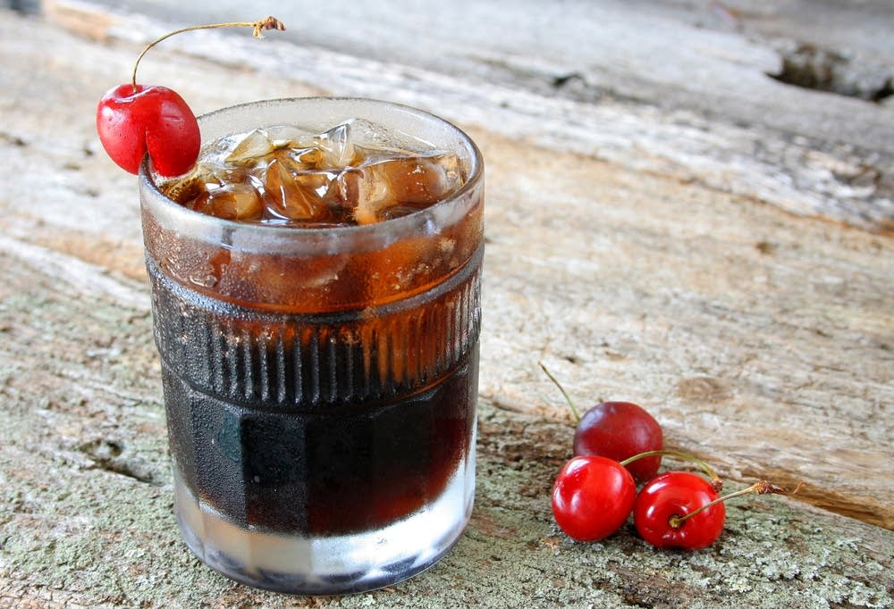

Homemade Coca-Cola

Description
This formula yields a beautiful cola concoction using all fresh and dried ingredients, readily available in most home refrigerators and spice cupboards. The one ingredient you might have to search for is gum arabic. It's there for mouthfeel rather than flavor, so if you don't have it, your cola will still be delicious; it will just seem a little thin.
Ingredients
- 1 Quart Water
- Finely Grated Zest and Juice of 1 Lemon
- Finely Grated Zest and Juice of 1 Lime
- Finely Grated Zest and Juice of 2 Oranges
- 3 Large (5-inch) Cinnamon Sticks, Broken into Small Pieces
- 2 Tbsp Dried Bitter Orange Peel
- 2 Tsp Coriander Seed
- 1/4 Tsp Finely Grated Nutmeg
- 1 Teaspoon Gum Arabic (optional)
- 2 Pounds Sugar
- 1/4 Cup Browning Sauce, Such as Kitchen Bouquet
- 1/2 Tsp Vanilla Extract
Steps
Prerequisite for Batch Cola Syrup
- Combine the water, lemon zest, lime zest, orange zest, cinnamon, bitter orange peel, coriander seed, nutmeg, and gum arabic (if using) in a large saucepan. Whisk together until the gum arabic dissolves. Stir in the sugar and bring to a boil, stirring until the sugar dissolves.
- Let boil for 1 minute.
- Remove from the heat and stir in the lemon, lime, and orange juices, along with the browning sauce and vanilla. Let cool, then strain. This syrup will keep in the refrigerator for up to 2 weeks.
Main Steps, add with:
- 4 Quarts Lukewarm (80-90°F) water
- 1 Batch Cola Syrup
- 1/8 Tsp Champagne Yeast (Saccharomyces Bayanus)
- Combine the water and syrup in a large container. Test the temperature; the mixture should be at a warm room temperature, from 75 to 80°F. (If it is too hot, let it sit until it cools a bit. If it is too cold, warm it over low heat.) Add the yeast and stir until it is completely dissolved.
- Pour the mixture into sanitized plastic bottles using a sanitized kitchen funnel, leaving 1 1/4 inches of air space at the top of each bottle. Seal the bottles. Store for 2 to 4 days at room temperature. When the bottles feel rock hard, the soda is fully carbonated.
- Refrigerate for at least 1 week before serving; drink within 3 weeks to avoid overcarbonation.